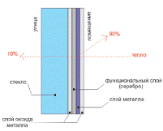
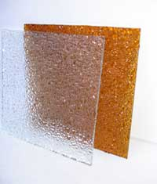
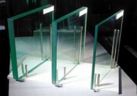

Обзор видов стекол
 Энергосберегающее стекло
Энергосберегающее стекло

Энергосберегающее стекло, применяемое в производстве пластиковых окон, обладает наиболее важной функцией стекла для большинства регионов России – высокой теплоизоляцией. У нас Вы можете заказать пластиковые окна, в которых установлены стеклопакеты с энергосберегающими стеклами, препятствуют потерям тепла, которые возникают в результате теплового излучения.
Энергосберегающие свойства придают стеклу путем нанесения на его поверхность низкоэмиссионных оптических покрытий. С таким покрытием, стекло пропускает внутрь помещения солнечное коротковолновое излучение, но препятствует выходу длинноволнового спектра излучения, которое может быть получено от отопительного прибора.
Энергосберегающие стекла выпускают с двумя типами покрытий: К-стекло (Low-Е) имеет твердое покрытие и I-стекло (Double Low- E) имеет мягкое покрытие.
В Европе большую популярность получило К-стекло, благодаря нейтральному цвету, прекрасной теплоизолирующей способности, а также простоте обработки.
К-стекло устанавливается в стеклопакеты в качестве внутреннего, со стороны помещения. Его устанавливают так, что низкоэмиссионное оптическое покрытие обращено внутрь стеклопакета. При такой ориентации стекла, происходит нагревание внутренней поверхности, что уменьшает конденсацию, вызванную разностью температур.

Армированное стеклоАрмированное стекло, также применяемое в пластиковых окнах, усилено изнутри специальной сеткой из металлической проволоки, которая, при механических повреждениях стекла, удерживает осколки на себе, не позволяя им выпасть. Таким образом, армированное стекло, даже при механических повреждениях, остается преградой для распространения огня и дыма.
Закаленное стеклоЗакаленное стекло отличается от обычного — повышенной прочностью. При механических повреждениях закаленное стекло рассыпается на множество мелких осколков, не способных серьезно травмировать человека. Закаленное стекло используется не только в пластиковых окнах, но и в тех местах, где необходима прочность, безопасность и термоустойчивость.
Закаленное стекло также используется в раздвижных стеклянных дверях, безрамных конструкциях и душевых кабинах.
Листовое прозрачное стеклоБазовым продуктом стекольной промышленности является листовое стекло, которое изготавливают методом флоат или вертикального вытягивания, без дополнительной обработки поверхностей. Листовое — кальций-натрий-силикатное прозрачное стекло имеет вид прямоугольных листов, с толщиной от 1,9 до 19 миллиметров.
Листовое стекло существует двух видов: полированное и неполированное. Помимо этого, листовое стекло может быть цветным или бесцветным. Но даже самое прозрачное оптическое стекло способно пропускать не более девяноста пяти процентов света.
Многослойное стекло
Многослойное стекло является надежной защитой от взлома и актов вандализма. Многослойное стекло изготавливают методом связывания между собой нескольких обычных стекол. В качестве связующего элемента, обычно используют полимеры, твердеющие под воздействием ультрафиолета.
Солнцезащитное стеклоСолнцезащитное стекло способно абсорбировать солнечную энергию за счет тонировки. Тонирование стекол может осуществляться при изготовлении стекла, методом добавления различных оксидов металлов в жидкую массу, либо при помощи тонирующих пленок и напылений. Тонирование стекол при изготовлении более надежно и долговечно, поскольку напыление и тонирующая пленка — менее устойчивы к механическим повреждениям.
Светофильтрующая способность тонированного, солнцезащитного стекла — позволяет значительно снизить перегрев помещений, находящихся на солнечной стороне здания, а также снижает световую нагрузку на глаза человека, что может положительно сказываться на работоспособности.
Стекло окрашенное в массеСтекло окрашенное в массе изготавливают из сырьевых материалов, в которые, в процессе изготовления добавляют различные вещества, окрашивающие готовы продукт в желаемый цвет. Чаще других используют промежуточные цвета между бронзовым и коричневым, серым и зеленым.
Также возможно изготовление стекол других цветов. Стекла, окрашенные в массе, известны как солнцезащитные или абсорбирующие стекла, поскольку они абсорбируют (поглощают), больше света и тепловой солнечной энергии, чем обычные прозрачные стекла.
Ударостойкое стеклоУдаростойкое стекло способно выдерживать многократные удары падающего тела. Ударостойкие стекла применяемые в пластиковых окнах, в зависимости от числа выдерживаемых ударов и массы падающего тела — подразделяются на три класса защиты. Помимо этого, ударостойкие стекла подразделяются на стекла, применяемые при положительных температурах, а также используемые при температурах окружающей среды ниже ноля градусов.
Узорчатое стеклоУзорчатое стекло применяется для остекления витражей, дверных проемов, окон, перегородок, где требуется рассеивание света, а также применяется для изготовления декоративных элементов мебели. Узорчатое стекло может быть цветным или бесцветным, имеет одну гладкую сторону, поскольку стекло необходимо резать.
Химически упрочненное стеклоХимически упрочненное стекло имеет повышенную прочность. При механическом воздействии стекло разбивается на длинные, острые осколки. По этой причине такое стекло не считается безосколочным. Химически упрочненное стекло, при необходимости, может быть многослойным.
Химически упрочненное стекло изготавливают путем погружения в ванну с нитратом калия при 4500 С. В процессе обработки, ионы натрия находящиеся в стекле, заменяются ионами калия из раствора в ванне.
Ионы калия проникают в свободное пространство между ионами натрия, в то время как ионы натрия перемещаются в раствор нитрата калия. Компрессия поверхности химически упрочненного стекла достигает 690 мегапаскалей.
На сегодняшний день существует и более передовой, двухэтапный процесс изготовления химически упрочненного стекла. Во время этого процесса, стекло сначала погружают в ванну, с нитратом натрия при 450о С. Его поверхность обогащается ионами натрия. Таким образом, получается, что в стекле, перед его погружением в нитрат калия, находится большее количество ионов натрия, для замещения их ионами калия. Применение ванны нитрата натрия увеличивает потенциал компрессии поверхности у готового изделия.
При химическом упрочнении стекла не используется метод перепада температур, благодаря чему стекло не деформируется, и в нем не появляются оптические искажения.
Химически упрочненное стекло часто применялось в военной промышленности.